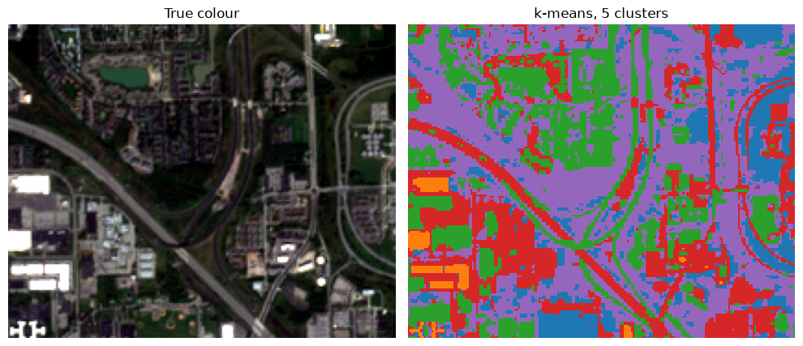
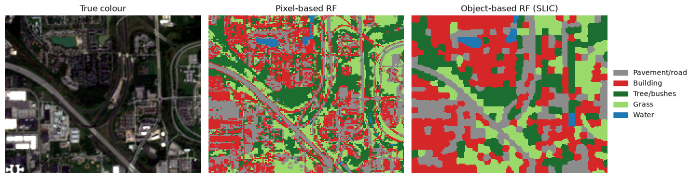

Fifteen notebooks turn that grid into a map of categories, from a single Landsat scene to multi-sensor fusion. Self-supervised pretraining and geospatial foundation models have their own chapter, 09_11_foundations_models.
Introduction to Image Classification. This notebook. What is labelled (a pixel, a segment, a chip, or a box), how many labels exist, and which model reads the image.
Image Processing. Clean, resample, stretch, filter, and add edge and texture layers before a classifier sees the image.
Sampling, Accuracy Assessment and Reproducible Runs. How the split changes the reported accuracy, with uncertainty, area-adjusted estimates, and a reproducible run.
Classical Image Classification: Pixel-Based and Object-Based. Land cover and crop type in the Corn Belt from one mid-season Landsat scene and the 2025 Cropland Data Layer.
Image Classification with a CNN on the GPU: Landsat and the Cropland Data Layer. A neighbourhood CNN on the same 2025 Landsat scene.
Deep Learning for Sentinel-2: CNN, ResNet, EfficientNet, ConvNeXt, ViT and Swin on the GPU. Those architectures on a late-August 2025 Sentinel-2 scene of the Corn Belt.
Transfer Learning and Vision Transformers for Sentinel-2: ImageNet vs Remote-Sensing Weights. A linear probe, partial fine-tuning, and full fine-tuning from ImageNet and remote-sensing weights.
Crop Classification with Sentinel-1 SAR Time Series: Pixel Classifiers and Deep CNNs (VV/VH, May-October 2024). VV and VH backscatter through a growing season, with pixel classifiers and CNNs.
Spatio-Temporal and Multi-Sensor Crop Mapping: Sentinel-2, Sentinel-1 and Landsat Time Series, 2020 to 2025. Six seasons of three sensors, using when a crop greens up and senesces.
Mapping Wetland Paddy in Bangladesh with a 2025 to 2026 Sentinel-1 Time Series. Cloud-free SAR for flooded rice and the dates of its management.
Change Detection: Classical, Post-Classification and Deep Methods on Landsat and Sentinel-2, 2020 to 2025. What differs between two dates, including the corn-soybean rotation.
Semantic Segmentation of Crop Types from Sentinel-2: FCN, U-Net, DeepLabV3(+) and SegFormer on the GPU. A class for every pixel, so field edges are kept.
Instance Segmentation of Agricultural Fields with Mask R-CNN. A separate mask for each field on eight-band WorldView-2.
Imperfect labels and domain shift. Few labels, noisy maps, and a model applied to another year or place.
Multi-sensor image fusion. MODIS, Landsat, Sentinel-2, Sentinel-1, and finer commercial or aerial images in one map.
Overview
Image classification turns those numbers into a map of categories: water, building, corn, soybean, burned, changed. The word covers a wide family of problems that differ in what is labeled (a pixel, a segment, a whole chip, a box), how much labeled data exists (none, a few points, a lot), and what model reads the image (a clustering rule, a random forest, a convolutional network, a foundation model). This notebook is the map of that family. It defines each type, says when it fits, and shows what geolattice.rsense.classify.image_classification offers for it, with a small hands-on example on Sentinel-2 data.
Section 12 is a guide to the notebooks of this chapter (09_09). Finding individual objects (trees, swimming pools, field boundaries) has its own chapter, 09_10_object_detection, which starts with 09_10_00_object_detection.ipynb. Here object detection is only placed in the family of tasks (Sections 2 and 6.2).
Core concepts
Learning objectives
Separate scene classification, pixel classification (semantic segmentation), object detection, instance segmentation, change detection and time-series classification by their input and output.
Compare pixel-based and object-based classification.
Compare unsupervised, supervised, semi-supervised and self-supervised learning, and name the cases in between (weak labels, active learning, zero-shot).
Explain how computer vision differs on satellite imagery, and why leakage-safe validation matters more than model choice.
Map every method in this chapter to the GeoLattice function that implements it, and to the notebook that uses it.
Run an unsupervised, a supervised, an object-based and a semi-supervised classification on one Sentinel-2 scene and judge them on a spatially separated test set.
Contents
What image classification is
Task types
The spatial unit: pixel or object
Learning paradigms
Computer vision on satellite imagery
Semantic segmentation and object detection in more detail
Available methods
Evaluating a classification
What GeoLattice offers
Hands-on: land cover from a Sentinel-2 scene
Choosing a method
The notebooks in this chapter
Summary, exercises and references
Image Classification
A multispectral pixel is a vector \(\mathbf{x}=(x_1,\dots,x_B)\) of \(B\) band values. A classifier is a function \(f\) that assigns it one of \(K\) classes,
\[\hat{y} = f(\mathbf{x}) \in \{1,\dots,K\}.\]
The classes only make sense next to a classification scheme: a fixed, exhaustive and mutually exclusive list such as pavement, building, tree, grass, water. Two things make this harder than it looks.
Spectral confusion. Different surfaces look alike (dark roofs and asphalt) and one surface looks different (a tree in sun and in shade). The spectrum alone is rarely enough, so context (texture, shape, neighbours, dates) is added.
Mixed pixels. A 10 m pixel can hold a roof edge, a road and a tree crown. The label describes the dominant cover, not the truth inside the pixel.
The output is a thematic map: a raster where each cell holds a class code, with the same CRS and grid as the input. A map without an accuracy statement is only a picture, which is why Section 8 and the GeoLattice evaluation tools matter as much as the classifier.
The spatial unit: pixel or object
The spatial unit is the thing that gets a label. It is a choice independent of the learning paradigm (ic.SPATIAL_UNITS = ("pixel", "object")).
Pixel-based
Object-based (OBIA)
Unit
one pixel
a segment of similar neighbouring pixels
Features
band values, indices, optionally a window of neighbours
per-segment mean, standard deviation, shape, texture
Strengths
simple, fast, no segmentation to tune, works at any resolution
removes “salt-and-pepper” noise, gives polygons, uses shape and texture, fewer units to classify
Weaknesses
noisy maps, ignores context unless features add it
the result depends on segmentation scale; under- and over-segmentation both cost accuracy
Best for
medium resolution (Landsat, Sentinel-2), spectrally distinct classes
very high resolution (sub-metre), SAR speckle, parcel-like targets
GeoLattice
train_pixel_classifier + predict_map
object_based_classify (SLIC by default, classify/obia.py)
Deep networks blur this line. A CNN or U-Net reads a window around each pixel, so it learns context itself and is pixel-based in output but object-aware in what it sees.
Learning paradigms
The paradigm is set by how much labeled data exists (ic.LEARNING_MODES).
Unsupervised
No labels. The algorithm groups pixels by spectral similarity (k-means, mini-batch k-means, Gaussian mixture, ISODATA-style clustering). The result is clusters, not classes: an analyst must name them afterwards, and one cluster can mix two classes. Use it to explore an area, to check that classes are separable, or to build a first guess before collecting samples. GeoLattice: unsupervised_classify(image, n_classes, method="kmeans" | "minibatch_kmeans" | "gmm").
Supervised
Labeled examples (points, polygons or masks) train a model that predicts the label of unseen pixels. This is the workhorse of operational mapping.
Classical machine learning on hand-built features: random forest, support vector machine, gradient boosting (XGBoost), k-nearest neighbours, logistic regression, small multilayer perceptron. Fast, needs hundreds to thousands of labels, and is easy to interpret.
Deep learning learns the features: CNNs, U-Nets, vision transformers. It needs more labels or a pretrained backbone, and pays off with high resolution, texture and many dates.
A few labels plus a large pool of unlabeled pixels. The model labels the pool itself (pseudo-labels) and learns from the confident ones, or it is trained so that its predictions stay consistent under perturbation. Gains are real when labels are scarce and clusters in feature space respect the classes, and they can be zero or negative when the first model is badly wrong, because it then teaches itself its own mistakes. GeoLattice: self_training, pseudo_label, fixmatch_loss, train_fixmatch.
Self-supervised
No labels for pretraining. The model solves a task made from the images themselves: pulling two views of the same place together and pushing others apart (contrastive learning: SimCLR, MoCo, SeCo), or reconstructing masked patches (masked autoencoders). The learned encoder is then reused with a few labels through a linear probe or fine-tuning. Satellite archives are huge and mostly unlabeled, so this is the main route to geospatial foundation models. GeoLattice: pretrain_contrastive, build_mae, pretrain_masked, extract_embeddings, linear_probe.
Computer vision supplies most of the models, and the reasons they do not transfer unchanged are the reasons for GeoLattice’s design.
Natural photos
Satellite and aerial imagery
Consequence
3 bands (RGB)
4 to hundreds of bands, plus SAR, DEM, indices
replace the first convolution: adapt_input_channels, build_cnn(in_channels=...)
Objects upright, large, centred
seen from above, any orientation, tiny, dense
rotation and flip augmentation: OverheadAugment; oriented boxes: obb_to_polygon
Images are independent
neighbouring pixels are correlated (spatial autocorrelation)
split by geography: spatial_block_split
Fixed image size
scenes are gigapixels and georeferenced
tile, predict, blend seams, write back with CRS: sliding_window_predict, write_class_map
Camera pixels are comparable
digital numbers, reflectance and backscatter differ by sensor and date
normalize with statistics from training data only: Normalizer
Each photo is one time
repeat acquisitions carry phenology
temporal models: build_temporal_model
The main architecture families:
Convolutional networks (LeNet, VGG, ResNet, EfficientNet, ConvNeXt) learn local patterns. Their reach is the receptive field, the ground area one output sees. receptive_field(model) reports it, which tells you whether a network can even see a building or a field.
Encoder-decoder segmenters (FCN, U-Net, DeepLabV3+, FPN, PSPNet, SegFormer) turn that into a per-pixel map.
Vision transformers (ViT, Swin) use attention across patches, see global context, and scale well with unlabeled pretraining. vit_attention_rollout shows where they look.
Foundation models (Prithvi-EO, Clay, SatlasPretrain, DOFA, SSL4EO, SatMAE, Scale-MAE, SkySense) are large encoders pretrained on global archives. foundation_model_info lists them and load_foundation_encoder loads them.
Semantic segmentation and object detection in more detail
Semantic segmentation
A network maps an image tile of shape \((B,H,W)\) to class scores of shape \((K,H,W)\), and the arg-max is the class map. U-Net style encoder-decoders downsample to gather context and upsample to recover detail, with skip connections that carry sharp edges across. Training uses a per-pixel loss (cross-entropy, Dice, focal, Lovasz) and, for thin classes such as field boundaries, boundary_weight_map. Large scenes are predicted tile by tile with overlap, and sliding_window_predict blends the seams. Metrics are per-class IoU (intersection over union), Dice/F1, precision, recall and mean IoU: segmentation_metrics.
6.2 Object detection
A detector returns a list of boxes with a class and a score, not a class map.
Oriented boxes (YOLO-OBB) fit objects seen from above at any angle, such as ships, planes and buildings.
Satellite scenes are far larger than a detector’s input, so they are cut into overlapping tiles (detection_tiles), run (detect_objects), and the duplicates at tile edges are merged with non-maximum suppression (nms, merge_detections). Quality is mean average precision at an IoU threshold: mean_average_precision. count_objects summarizes detections per zone.
Agricultural fields are a special case: they touch and fill the landscape, so they are found through the boundaries between them rather than with boxes (geolattice.rsense.edge_detectors).
The 09_10_object_detection chapter covers all of this in detail: - 09_10_00 introduces IoU, NMS, mAP, the detector families and boundary networks; - 09_10_01 detects swimming pools and trees; - 09_10_02 to 09_10_04 delineate fields in Google screenshots, WorldView and Sentinel-2 imagery.
Available methods
A compact catalog, from classical to modern. Cost is relative, for a typical regional map.
Family
Methods
Labels needed
Compute
Strength
Limit
Rule-based
thresholds on indices (NDVI, NDWI, SAR ratios)
none
trivial
transparent
brittle across scenes
Clustering
k-means, GMM
none
low
exploration
clusters are not classes
Classical ML
random forest, SVM, XGBoost, kNN, MLP
hundreds to thousands
low
strong baseline, interpretable
no spatial context unless engineered
Object-based
segmentation + classifier
hundreds of objects
low to medium
clean polygons
scale sensitive
CNN / ViT chips
ResNet, EfficientNet, ConvNeXt, ViT, Swin
thousands
medium to high
learns features
needs chips and GPU
Segmentation nets
U-Net, DeepLabV3+, SegFormer
masks
high
wall-to-wall maps
needs masks
Detectors
Faster R-CNN, RetinaNet, YOLO
boxes
high
counts, locations
needs boxes
Temporal
TempCNN, LSTM, L-TAE, PSE-TAE, U-TAE
labels on a time series
medium to high
crop phenology
needs a regular stack
Multi-sensor fusion
early, middle, late optical + SAR
as above
medium
cloud-robust
co-registration
Self-supervised
SimCLR/MoCo, masked autoencoder
none, then few
very high pretrain
label-efficient
pretraining cost
Foundation models
Prithvi, Clay, Satlas, DOFA, SSL4EO
few
inference or fine-tune
strong transfer
check license and input spec
Promptable / vision-language
SAM, RemoteCLIP, GeoRSCLIP
none
medium
quick, zero-shot
unverified output
Two rules of thumb. Start with a random forest on good features: it is the baseline every deep model has to beat, and compare_with_baselines makes the comparison explicit. Move to deep learning when the image itself (texture, shape, context, dates) carries the signal and there are enough labels or a good pretrained encoder.
Evaluating a classification
Most reported accuracy in remote sensing is too high, and the cause is almost always spatial leakage. Neighbouring pixels are near-duplicates, so a random split puts almost the same pixel in train and test and rewards memorization. A fair test holds out whole blocks of ground. The same holds in time (hold out later dates) and across places (hold out a region).
Report per-class precision, recall, F1, kappa with intervals
classification_report(n_boot=...)
Find where the map is wrong
error_map
Estimate area of each class with uncertainty
geolattice.rsense.classify.accuracy (Olofsson et al. 2014)
Record the run
save_run, load_run
Overall accuracy hides rare classes. Read macro-F1 and the per-class table, and when the goal is an area estimate, use the area-adjusted estimator, because a map’s pixel counts are biased by its own errors.
What GeoLattice offers
All of it sits in one module that follows the order of a project:
import geolattice.rsense.classify.image_classification as ic # also: geolattice.rsense.image_classification
Georeferencing is kept.load_stack returns an xarray.DataArray with CRS, transform, nodata, band names, dates and sensor, so every output map lands on the right grid.
Heavy dependencies load on demand. The classical workflow needs pip install "geolattice[rsense-classify]". Deep learning needs geolattice[rsense-dl]. Importing the module does not import PyTorch.
Leakage guards are built in, as the splits and checks of Section 8.
One command line exposes the task, learning mode and spatial unit and runs the classical workflows end to end: python -m geolattice.rsense.classify.image_classification --help.
Model output is labeled as such. SAM and vision-language results carry ic.UNVERIFIED_NOTE: verify them against imagery or reference data.
Neighbouring modules: classify/estimators.py (the Classifier wrapper that uses GPU back ends when available), classify/obia.py (segmentation and segment features), classify/accuracy.py (confusion matrix and area-adjusted accuracy), classify/change.py.
. Hands-on: land cover from a Sentinel-2 scene
The scene is a 170 x 210 pixel, 10 m Sentinel-2 subset with ten bands (B2 to B12), and a table of labeled points for five classes: pavement/road, building, tree/bushes, grass, water. The code runs on a laptop in well under a minute.
Installation. This notebook needs installation option 6 (every GeoLattice module): pip install "geolattice[all]". See “Installation options” in the GeoLattice README.
Code
import warningsfrom pathlib import Pathimport matplotlib.pyplot as pltimport numpy as npimport pandas as pdfrom matplotlib.colors import ListedColormapfrom matplotlib.patches import Patchfrom sklearn.model_selection import train_test_splitimport geolattice.rsense.classify.image_classification as icfrom geolattice.rsense.classify import Classifierwarnings.filterwarnings("ignore")DATA = Path("../../../../Data/08_remote_sensing/08_09_image_classification/Sentinel_2_UB")CLASSES = {1: "Pavement/road", 2: "Building", 3: "Tree/bushes", 4: "Grass", 5: "Water"}COLORS = ["#8c8c8c", "#d62728", "#1b6e2f", "#9bd96b", "#1f77b4"]CMAP = ListedColormap(COLORS)HANDLES = [Patch(color=c, label=CLASSES[k]) for k, c inzip(CLASSES, COLORS)]print("Tasks :", ic.TASKS)print("Learning modes:", ic.LEARNING_MODES)print("Spatial units :", ic.SPATIAL_UNITS)
No labels are used. The five clusters are numbered arbitrarily, so the colours below do not match the class colours. Comparing them with the true-colour image is how an analyst would name them.
Code
clusters, km = ic.unsupervised_classify(img, n_classes=5, method="kmeans")fig, ax = plt.subplots(1, 2, figsize=(10, 4.4))ax[0].imshow(rgb); ax[0].set_title("True colour")ax[1].imshow(clusters.values, cmap="tab10", vmin=0, vmax=9, interpolation="nearest"); ax[1].set_title("k-means, 5 clusters")for a in ax: a.axis("off")plt.tight_layout(); plt.show()

Why the split matters: random versus spatial
The same random forest, scored two ways. A random split lets near-identical neighbouring pixels sit on both sides, so its score is optimistic. The spatial-block split holds out whole 200 m blocks and is the honest estimate of how the map behaves on ground the model has not seen.
Supervised, pixel-based: random forest with spatial cross-validation
train_pixel_classifier fits the model and, when coordinates and a block size are given, cross-validates by blocks. The spread across folds shows how much the score depends on where the test area is.
The image is first cut into about 800 segments. Each segment gets the mean and standard deviation of its bands, the labeled points give segment labels, a classifier is trained on segments and the labels are painted back on all pixels of each segment. The map is smoother and has no isolated pixels.
Code
obia = ic.object_based_classify(img, pts, "Class_ID", model="rf", n_segments=800, n_estimators=150)object_map = obia["map"]print("segments:", int(np.unique(obia["segments"].values).size), "| features per segment:", obia["features"].shape[1])# Score both maps on the same held-out blocks: look up the map value at each test point.def sample_map(m, xy):return np.array([m.sel(x=px, y=py, method="nearest").item() for px, py in xy])xy_test = coords[split.test]for name, m in [("pixel RF", pixel_map), ("object RF", object_map)]: p = sample_map(m, xy_test)print(f"{name:10s} accuracy on held-out blocks: {(p == y[split.test]).mean():.3f}")
segments: 716 | features per segment: 23
pixel RF accuracy on held-out blocks: 0.814
object RF accuracy on held-out blocks: 0.999
Semi-supervised: self-training from 60 labels
Keep only 60 labeled samples from the training blocks and treat the rest as an unlabeled pool. Self-training fits a model, pseudo-labels the pool pixels it is at least 90 % sure about, and refits. The test blocks are never touched. Whether it helps depends on the data: compare the two numbers, and do not assume an improvement.
fig, ax = plt.subplots(1, 3, figsize=(14, 4.4))ax[0].imshow(rgb); ax[0].set_title("True colour")for a, m, t in [(ax[1], pixel_map, "Pixel-based RF"), (ax[2], object_map, "Object-based RF (SLIC)")]: a.imshow(m.values, cmap=CMAP, vmin=1, vmax=5, interpolation="nearest"); a.set_title(t)for a in ax: a.axis("off")ax[2].legend(handles=HANDLES, loc="center left", bbox_to_anchor=(1.0, 0.5), frameon=False)plt.tight_layout(); plt.show()

Deep learning, in outline
Deep models are built with one call and accept any number of bands. The table sizes a few of them for the ten Sentinel-2 bands. Training them properly (chips, augmentation, losses, transfer learning) is the subject of the next chapters, so here they are only built and run on a random tile to show the input and output shapes.
Code
import torchrows = []for kind, name, build in [ ("scene classifier", "simple_cnn", lambda: ic.build_cnn("simple_cnn", in_channels=10, num_classes=5)), ("scene classifier", "resnet18", lambda: ic.build_cnn("resnet18", in_channels=10, num_classes=5)), ("scene classifier", "efficientnet_b0", lambda: ic.build_cnn("efficientnet_b0", in_channels=10, num_classes=5)), ("scene classifier", "convnext_tiny", lambda: ic.build_cnn("convnext_tiny", in_channels=10, num_classes=5)), ("segmentation", "unet_basic", lambda: ic.build_segmenter("unet_basic", in_channels=10, num_classes=5)), ("segmentation", "unet (resnet34)", lambda: ic.build_segmenter("unet", in_channels=10, num_classes=5)),]:try: m = build().eval()with torch.no_grad(): out = m(torch.randn(1, 10, 64, 64)) rows.append({"task": kind, "model": name, "parameters (M)": round(ic.count_parameters(m) /1e6, 1),"output for a 10 x 64 x 64 tile": tuple(out.shape)})exceptExceptionas e: rows.append({"task": kind, "model": name, "parameters (M)": None, "output for a 10 x 64 x 64 tile": type(e).__name__})display(pd.DataFrame(rows))
task
model
parameters (M)
output for a 10 x 64 x 64 tile
0
scene classifier
simple_cnn
0.0
(1, 5)
1
scene classifier
resnet18
11.2
(1, 5)
2
scene classifier
efficientnet_b0
4.0
(1, 5)
3
scene classifier
convnext_tiny
27.8
(1, 5)
4
segmentation
unet_basic
7.8
(1, 5, 64, 64)
5
segmentation
unet (resnet34)
24.5
(1, 5, 64, 64)
A scene classifier returns one score vector per tile. A segmenter returns one score vector per pixel, which is the class map after an arg-max. Foundation models are listed with provenance and input requirements, so check the “preprocessing” and “license” columns before using one:
Active learning, semi-supervised, weak and noisy labels, adaptation
09_09_05_04 Image Fusion
Multi-Sensor Data Fusion
Self-supervised pretraining (SimCLR, MoCo, MAE, linear probes) and foundation models (Prithvi, DOFA, SAM, RemoteCLIP, AlphaEarth and others) continue in chapter 08_11, starting with 09_11_01_self_supervised_pretraining_for_sentinel_2_crop_mapping.ipynb and 09_11_02_geospatial_foundation_models_embeddings_promptable_segmentation_and_zero_shot_classification.ipynb.
Summary, exercises and references
Summary
Image classification is a family of tasks. Name the task (scene, pixel, detection, instance, change, time series) before choosing a model.
The spatial unit (pixel or object) and the learning paradigm (unsupervised, supervised, semi-supervised, self-supervised) are independent choices.
Computer-vision models need adapting to many bands, overhead views, spatial correlation, huge georeferenced scenes and repeated dates. GeoLattice wraps each adaptation.
A random-forest baseline with spatial cross-validation is the reference every deeper model must beat, and spatial leakage is the main reason reported accuracies are too high.
geolattice.rsense.classify.image_classification covers the whole path in 14 sections, from load_stack to save_run.
The notebooks 09_09_01_01 to 09_09_05_04 (Section 12) work through these tasks on real data, chapter 08_10 continues with object detection and field boundaries, and chapter 08_11 with self-supervised pretraining and foundation models.
Exercises
Change block_size in Section 10.3 to 50, 200 and 500 m. How does the spatial-split accuracy change, and why?
Run unsupervised_classify with n_classes of 3, 5 and 8, and with method="gmm". Which clusters match the five classes?
Change n_segments in Section 10.5 to 200 and 3000. Where does the object map over- or under-segment?
Repeat Section 10.6 with 20, 60 and 200 labels and three seeds. When does self-training help, and when does it hurt?
Add NDVI and NDWI as extra features before train_pixel_classifier. Which classes improve?
Use ic.foundation_model_info("prithvi-eo-2.0") and write down which bands and normalization it needs. Could you feed it this scene as it stands?
References
Blaschke, T. (2010). Object based image analysis for remote sensing. ISPRS Journal of Photogrammetry and Remote Sensing, 65(1), 2-16.
Breiman, L. (2001). Random forests. Machine Learning, 45, 5-32.
Chen, T., Kornblith, S., Norouzi, M., Hinton, G. (2020). A simple framework for contrastive learning of visual representations (SimCLR). ICML.
Dosovitskiy, A. et al. (2021). An image is worth 16x16 words: transformers for image recognition at scale. ICLR.
He, K., Zhang, X., Ren, S., Sun, J. (2016). Deep residual learning for image recognition. CVPR.
He, K. et al. (2022). Masked autoencoders are scalable vision learners. CVPR.
Kirillov, A. et al. (2023). Segment anything. ICCV.
Olofsson, P. et al. (2014). Good practices for estimating area and assessing accuracy of land change. Remote Sensing of Environment, 148, 42-57.
Ploton, P. et al. (2020). Spatial validation reveals poor predictive performance of large-scale ecological mapping models. Nature Communications, 11, 4540.
Ren, S., He, K., Girshick, R., Sun, J. (2015). Faster R-CNN: towards real-time object detection with region proposal networks. NeurIPS.
Roberts, D. R. et al. (2017). Cross-validation strategies for data with temporal, spatial, hierarchical, or phylogenetic structure. Ecography, 40, 913-929.
Ronneberger, O., Fischer, P., Brox, T. (2015). U-Net: convolutional networks for biomedical image segmentation. MICCAI.
Sohn, K. et al. (2020). FixMatch: simplifying semi-supervised learning with consistency and confidence. NeurIPS.
Zhu, X. X. et al. (2017). Deep learning in remote sensing: a comprehensive review and list of resources. IEEE Geoscience and Remote Sensing Magazine, 5(4), 8-36.